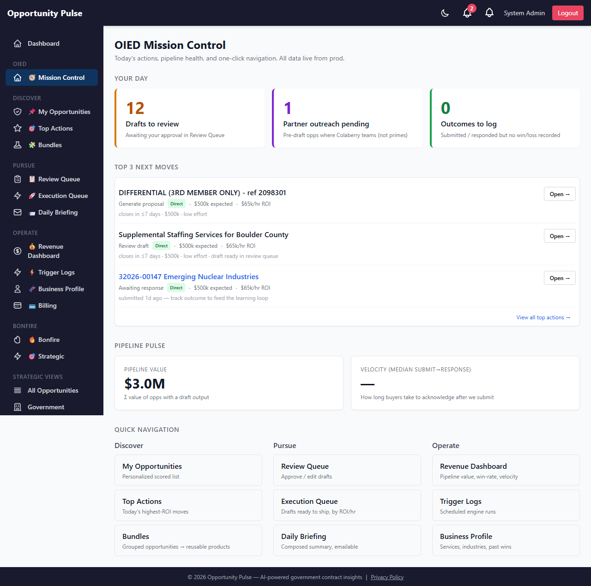
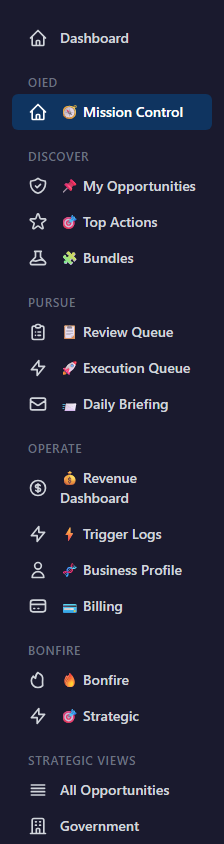
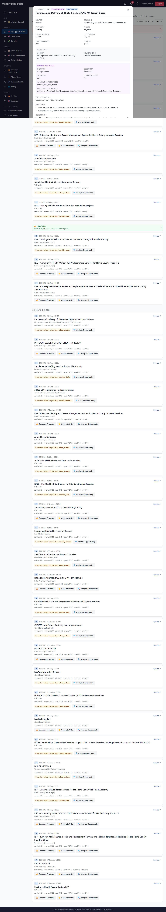
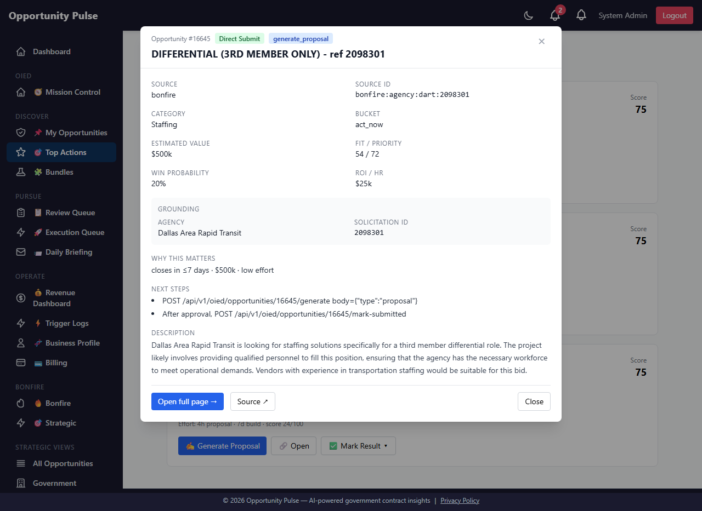
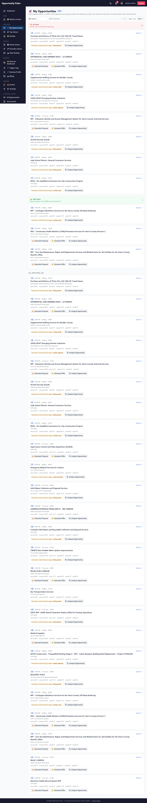
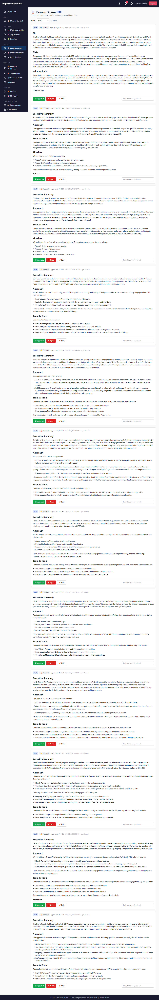

OIED v9.1 UX Update — Walkthrough Round 2
3f92cf0)
What changed
Six fixes shipped in a single bundle, addressing every "needs edit" from Ali's first walkthrough. The eight items marked "good" in round 1 are unchanged.
| Theme | Status | Fix |
|---|---|---|
| A. "No flow" | NEW | OIED Mission Control dashboard at /admin/oied + sidebar restructure |
| B. UI consistency | FIXED | Drill-down modal on My Opportunities, Top Actions, Execution Queue |
| C. Generate Proposal error | FIXED | Buttons hidden when lifecycle blocks; Review Queue link on success |
| D. Markdown in Review Queue | FIXED | Drafts now rendered as HTML, not raw markdown text |
| E. Briefing recipient | CONFIG | OIED_BRIEFING_TO=ali@colaberry.com set on prod |
| F. Trigger cron | CONFIG | Daily cron armed on prod (06:00 triggers, 07:00 briefing) |
Feedback boxes work the same way as round 1: notes auto-save to your browser. Click Copy all feedback at the bottom when done.
A. OIED Mission Control — new dashboard at /admin/oied
What it does
Single landing page that orients you and feeds you the next click. Four widgets stacked top-to-bottom:
- Day Counters — drafts to review, partner outreach pending, outcomes to log. Each card is also a link to the relevant page.
- Top 3 next moves — pulled from
/recommendations, with action label, mode badge, ROI/hr, and a one-click "Open →" button per row. - Pipeline Pulse — pipeline value (your call) and median submit→response velocity (your call). Both link through to Revenue Dashboard.
- Quick Nav — three columns (Discover / Pursue / Operate), one click to every other OIED page.
Screenshot

How to get there
- Sidebar → OIED → Mission Control. (Top of the new OIED block.)
- Or directly:
http://95.216.199.47:8091/admin/oied.
Expected behavior
- Day counters reflect current state (drafts in Review Queue, find_partner/send_outreach opps, submitted-without-outcome opps).
- Top-3 next moves carry the v9 execution_mode badge and override action where appropriate.
- Quick Nav tiles preserve their hover styling and navigate without a full reload.
Feedback
Status
A. Sidebar restructure — Discover / Pursue / Operate
What it does
The old flat OIED list (10 entries dropped into "Tools & Actions" when Bonfire was on) is replaced by a dedicated OIED block with a Mission Control link at the top, then 3 grouped subsections. Bonfire keeps its own block beneath, untouched.
New structure
- OIED → Mission Control (the dashboard above)
- Discover → My Opportunities · Top Actions · Bundles
- Pursue → Review Queue · Execution Queue · Daily Briefing
- Operate → Revenue Dashboard · Trigger Logs · Business Profile · Billing
Screenshot

Feedback
Status
B. Drill-down modal on three pages
What it does
Click any opportunity title on My Opportunities, Top Actions, or Execution Queue → modal opens with
the full /opportunities/:id intelligence envelope laid out: source, fit/priority,
win prob, ROI/hr, grounding (agency + solicitation + missing fields), partner_profile (industry,
geography, capabilities, Colaberry contribution), reason, next_steps, full description, source link.
Closes via the × button, the Close button at the bottom, clicking the backdrop, or pressing Escape.
Screenshots
From My Opportunities:

From Top Actions:

How Ali should use it
- Click the title of any row.
- Read the partner_profile and grounding to decide go/no-go.
- "Open full page →" jumps to the dedicated single-opp page; "Source ↗" opens the agency portal.
Feedback
Status
C. Generate Proposal — hidden when lifecycle blocks
What it does
The action buttons now read the row's recommended_action and only show
Generate Proposal + Generate Offer when the lifecycle gate would
actually allow them. For everything else (review_draft, mark_submitted, await_response, mark_outcome,
archive_*, find_partner, send_outreach), a small note appears explaining the current stage. The
Analyze Opportunity button stays available regardless (it doesn't modify lifecycle).
Screenshot

What you should not see anymore
- Raw "Proposal generation not allowed at this lifecycle stage" 400 errors when clicking from My Opportunities.
- The Generate Proposal button on rows whose lifecycle is past pre-draft.
If a generation does fail
The error banner now also surfaces structured details: for 422 needs_context it lists the missing fields; for 400 invalid_stage it tells you the actual blocking event so you can route to Mark Outcome instead.
Feedback
Status
C. After Generate / Analyze — Review Queue link in the success banner
What it does
Successful generations now show a small green banner with the draft's id and a clickable Review Queue → link that takes you straight to the queue.
Where to see it
My Opportunities → click Analyze Opportunity or (if pre-draft) Generate Proposal on any row. Banner appears inline next to the button row.
Feedback
Status
D. Review Queue — drafts rendered as HTML, not raw markdown
What it does
Draft content is now rendered as proper HTML: ## headings, bold/italic, ordered + unordered
lists, paragraphs, inline code, horizontal rules. Inputs are HTML-escaped before transformation so
no raw markup can sneak through. No external dependencies — small custom renderer in
src/utils/safeMarkdown.js.
Screenshot

Editing
Clicking Edit still drops you into the raw textarea (so you can adjust markdown directly). Save flips the card back to rendered view.
Feedback
Status
E. Daily Briefing — recipient configured
What changed
OIED_BRIEFING_TO=ali@colaberry.comset in/opt/opportunity-pulse/.env.prod.docker-compose.prod.ymlupdated to pass the var into the backend container.- Backend container restarted; env vars confirmed inside the container.
What you should see now
Click Email me this on the Daily Briefing page. It should send to ali@colaberry.com
via Mandrill. Note: the request takes 30–60 seconds because the briefing composer uses the AI; if nginx
times out at 60s you'll see a gateway timeout in the UI but the email still goes out (delivery is async).
Feedback
Status
F. Trigger Logs — daily cron armed
What changed
OIED_AUTO_TRIGGERS_ENABLED=true+OIED_AUTO_TRIGGERS_CRON=0 6 * * *in.env.prod.OIED_BRIEFING_ENABLED=true+OIED_BRIEFING_CRON=0 7 * * *in.env.prod.- Backend logs confirm both schedulers started:
OIED briefing scheduler started cron="0 7 * * *" OIED trigger engine scheduler started cron="0 6 * * *" dryRun=true
What you should see
- 06:00 daily — trigger engine fires (currently in dry-run mode; flip
OIED_AUTO_TRIGGERS_DRY_RUN=falselater if you want it to actually take actions). - 07:00 daily — composed briefing emails to ali@colaberry.com.
- Trigger Logs page now accumulates one cron run per day.
Feedback
Status
What didn't change (round-1 "good" items)
The eight features Ali approved in round 1 are untouched. Listed here so nothing got lost in translation:
- Business / Organization Profile (#8)
- Bundles (#9)
- Bundle Strategy (#10)
- Bundle Blueprint (#11)
- Bundle Execution Plan (#12)
- External AI Bridge API (#13)
- Lifecycle Flow (#14)
- Grounded Proposal Generation (#15)
Approved Assets / banned terms (#16), Partner Required Mode (#17), Partner Outreach Flow (#18), Direct Submit Flow (#19), Mark Outcome Flow (#20) and the v8/v9 server-side guarantees they depend on are also unchanged. The drill-down modal surfaces all of these visibly inside the new modal.
Final Feedback Summary (round 2)
Anything that didn't fit into a per-fix box. New features Ali wants for v10. Things still feeling off after this round of fixes.
Feedback persists locally to your browser. Click Copy all feedback to dump everything as markdown for sharing.